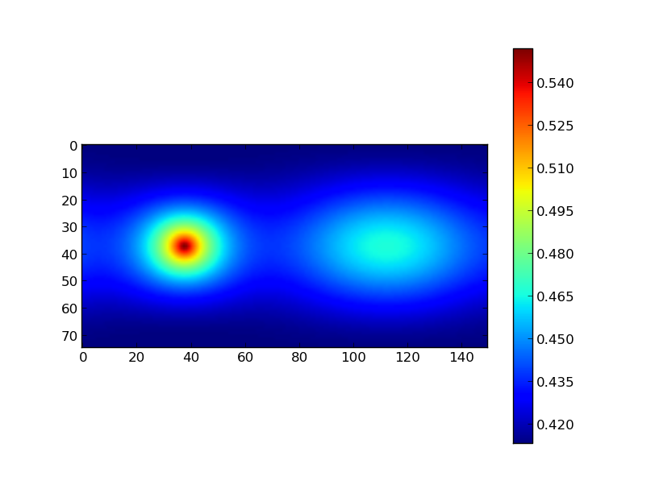
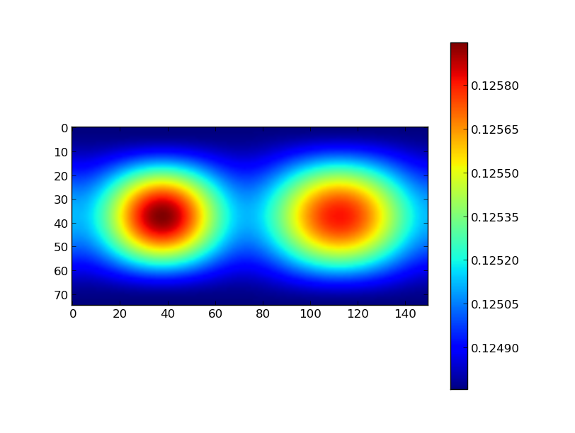

{kind=link}
{kind=link}
{kind=link}
{kind=link}

: tocdepth: 2
Mayavi is general 3D visualisation tool, for which python wrappers are available. There are a lot of parallels between matplotlib and mayavi:
- there exists huge object-oriented library, allowing you to control even the smallest detail in a plot.
- there exists a module around that library called mlab, similar (and in fact inspired by) pylab.
There are of course differences too. An advantage of mlab over pylab is its visualisation tool: the interactive display is much faster working in 3D than pylab‘s 3D toolkit. A disadvantage of mlab is that it is much more difficult to make publication quality plots.
In this example we’ll try to reproduce the shapes of stars in a close binary system, one of which almost fills its Roche lobe. We will use mlab and pylab to visualise the shapes.
First, we need to import some stuff: numpy, pylab and of course mlab. Also, we need an optimizer, because there is no analytical representation of the Roche surface. We will use the Newton-Raphson gradient method from SciPy’s suite of optimizers.
In [1]: import numpy as np
In [2]: from numpy import sin,cos,pi,sqrt # makes the code more readable
In [3]: import pylab as plt
In [4]: from mayavi import mlab
---------------------------------------------------------------------------
ImportError Traceback (most recent call last)
/home/nhmc/code/repo/python4ESAC/source/py4ast/core/<ipython-input-4-3f0e4b94a8ea> in <module>()
----> 1 from mayavi import mlab
ImportError: No module named mayavi
In [5]: from scipy.optimize import newton
SciPy’s optimizers usually need a function that returns the residuals of a fitting function. In this case, we want to fit the Roche surface (let us simplify it to a circular, synchronized system). We will use spherical coordinates, and assume that we want to find the radius r given the colatitude theta and longitude phi. The fit-parameter r needs to be the first argument to the function, the order of the other parameters is not important.
In [1]: def roche(r,theta,phi,pot,q):
In [1]: lamr,nu = r*cos(phi)*sin(theta),cos(theta)
In [1]: return (pot - (1./r + q*( 1./sqrt(1. - 2*lamr + r**2) - lamr) + 0.5*(q+1) * r**2 * (1-nu**2) ))
In [1]:
Next, we generate a grid in colatitude and longitude. We take 75 points in the colatitudinal direction (between 0 and pi), and 150 points in the longitudinal direction (between 0 and 2pi, but we shift the zeropoint with pi/2 to make nicer plots later on).
In [1]: theta,phi = np.mgrid[0:np.pi:75j,-0.5*pi:1.5*np.pi:150j]
The Roche lobe filling star has a potential value of 2.88, the companion is smaller and has a potential of 10. The Roche lobe filling star is twice as massive as the secondary.
In [1]: pot1,pot2 = 2.88,10.
In [2]: q = 0.5
We need a good starting value to start the Newton-Raphson method so that it can descend to the true value. We could do that by first checking what the expected shape of the star is. However, since the Roche potential behaves well, we can be lazy and choose a value very close to (but not equal to) 0. We take an arbitrary 0.00001.
In [1]: r_init = 1e-5
Next, we need to iterate over all coordinates theta and phi, and apply the Newton-Raphson method to find the radius (slow!). We constructed a two dimensional grid of coordinates, which is a bit anoying to iterate over (though possible for sure!). In this approach, we make the colatitude and longitude 1D dimensional first, and iterate simultaneously over theta and phi:
In [1]: r1 = [newton(roche,r_init,args=(th,ph,pot1,q)) for th,ph in zip(theta.ravel(),phi.ravel())]
In [2]: r2 = [newton(roche,r_init,args=(th,ph,pot2,1./q)) for th,ph in zip(theta.ravel(),phi.ravel())]
The approach with list-comprehension implies that we need to convert the radii for both components explicitly to an array type, and we reshape it to match the original shape of theta and phi:
In [1]: r1 = np.array(r1).reshape(theta.shape)
In [2]: r2 = np.array(r2).reshape(theta.shape)
That’s basically it! We did everything in spherical coordinates because that is most natural in this case. To plot, however, we need cartesian coordinates:
In [1]: x1 = r1*sin(theta)*cos(phi)
In [2]: y1 = r1*sin(theta)*sin(phi)
In [3]: z1 = r1*cos(theta)
In [1]: x2 = r2*np.sin(theta)*np.cos(phi)
In [2]: y2 = r2*np.sin(theta)*np.sin(phi)
In [3]: z2 = r2*np.cos(theta)
Plotting with Mayavi is now as simple as with matplotlib. We color the surface according the size of the radius. An interactive display should appear after executing these commands (else, use mlab.show()):
In [1]: mlab.figure()
---------------------------------------------------------------------------
NameError Traceback (most recent call last)
/home/nhmc/code/repo/python4ESAC/source/py4ast/core/<ipython-input-1-28cec454b7a9> in <module>()
----> 1 mlab.figure()
NameError: name 'mlab' is not defined
In [2]: mlab.mesh(x1,y1,z1,scalars=r1)
---------------------------------------------------------------------------
NameError Traceback (most recent call last)
/home/nhmc/code/repo/python4ESAC/source/py4ast/core/<ipython-input-2-841728bc45e1> in <module>()
----> 1 mlab.mesh(x1,y1,z1,scalars=r1)
NameError: name 'mlab' is not defined
So what about the secondary? Because of the definition of the Roche surface we used, both stars are made in the same coordinate system, so they will overlap. We can easily but the secondary in its place by executing:
In [1]: x2_ = -x2
In [2]: x2_+= 1
But we choose to do it the hard (but more general) way: via a proper coordinate transformation. The secondary needs to be rotated around the Z-axis, and then moved to its proper coordinates:
In [1]: rot_angle = pi
In [2]: Rz = np.array([[cos(rot_angle),-sin(rot_angle),0],
...: [sin(rot_angle), cos(rot_angle),0],
...: [0, 0, 1]])
...:
In [3]: B = np.dot(Rz,np.array([x2,y2,z2]).reshape((3,-1))) # we need to have a 3x3 times 3xN array
In [4]: x2,y2,z2 = B.reshape((3,x2.shape[0],x2.shape[1])) # but we want our original shape back
In [5]: x2 += 1 # simple translation
In [1]: mlab.figure()
---------------------------------------------------------------------------
NameError Traceback (most recent call last)
/home/nhmc/code/repo/python4ESAC/source/py4ast/core/<ipython-input-1-28cec454b7a9> in <module>()
----> 1 mlab.figure()
NameError: name 'mlab' is not defined
In [2]: mlab.mesh(x1,y1,z1,scalars=r1)
---------------------------------------------------------------------------
NameError Traceback (most recent call last)
/home/nhmc/code/repo/python4ESAC/source/py4ast/core/<ipython-input-2-841728bc45e1> in <module>()
----> 1 mlab.mesh(x1,y1,z1,scalars=r1)
NameError: name 'mlab' is not defined
In [3]: mlab.mesh(x2,y2,z2,scalars=r2)
---------------------------------------------------------------------------
NameError Traceback (most recent call last)
/home/nhmc/code/repo/python4ESAC/source/py4ast/core/<ipython-input-3-d11dcb88da02> in <module>()
----> 1 mlab.mesh(x2,y2,z2,scalars=r2)
NameError: name 'mlab' is not defined
All the arrays presented above are 2D. This means we could also feed the radius array to pylab and make a color plot:
In [1]: plt.imshow(r1)
Out[1]: <matplotlib.image.AxesImage at 0x676e1d0>
In [2]: plt.colorbar()
Out[2]: <matplotlib.colorbar.Colorbar instance at 0x6ac57e8>
In [3]: plt.imshow(r2)
Out[3]: <matplotlib.image.AxesImage at 0x4624e50>
In [4]: plt.colorbar()
Out[4]: <matplotlib.colorbar.Colorbar instance at 0x6acf440>
|  |  |